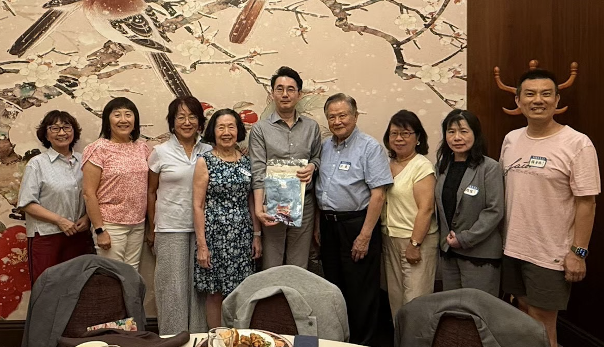
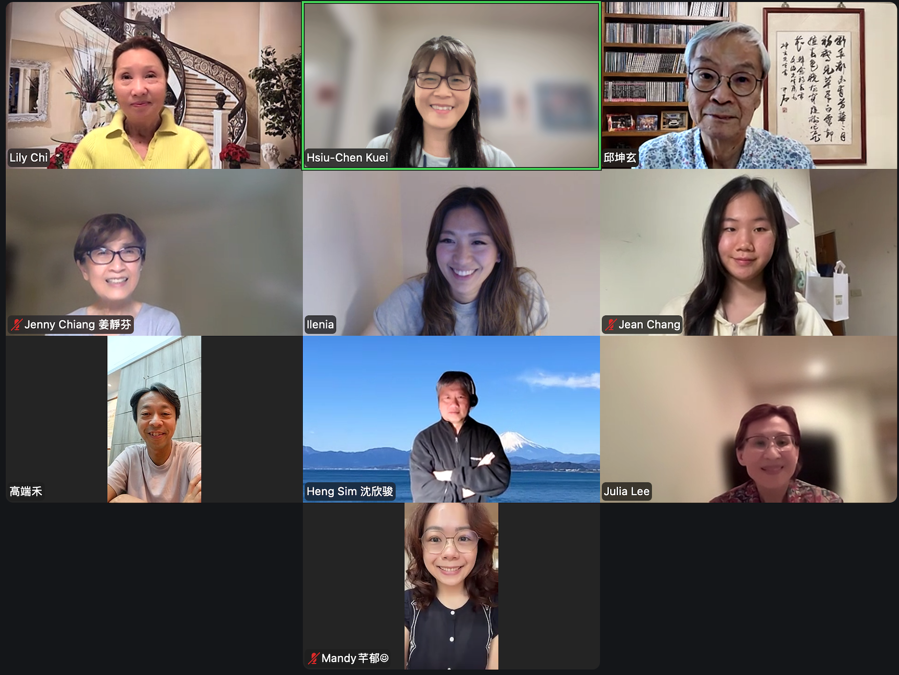

Distinguished National Chengchi University alumnus and Professor of
Diplomacy, Dr. Kwei-bo Huang, led a group of NCCU students on a visit
to Google in the San Francisco Bay Area.（07/28/2026）
傑出政大校友暨外交系教授黃奎博博士率政大學生來灣區參訪谷歌公司 Google。（07/28/2026）

Distinguished National Chengchi University (NCCU) alumnus and
Professor of Diplomacy, Dr. Kwei-bo Huang, led a group of students
on a visit to the Bay Area. He met with the NCCU alumni in
Northern California, including several NCCUNCAF board members and
senior alumnus Mr. Douglas Hung. (07/31/2026)傑出政大校友暨外交系教授黃奎博博士率學生來灣區參訪。特專訪北加校友，與基金會董事們及校友洪讀學長等人相見歡。(07/31/2026)

2027 NCCU Centennial — Chen Sheng Chorus & Alumni Classic
Choir California Visit and Concert Program — Planning Meeting #3
2027 (05/21/2026）2027 政大百年校慶
振聲合唱團暨經典合唱團北美巡演規劃會議（三）(05/21/2026）Foundation Board Meeting (09/18/2026）基金會九月份會議 (09/18/2026）